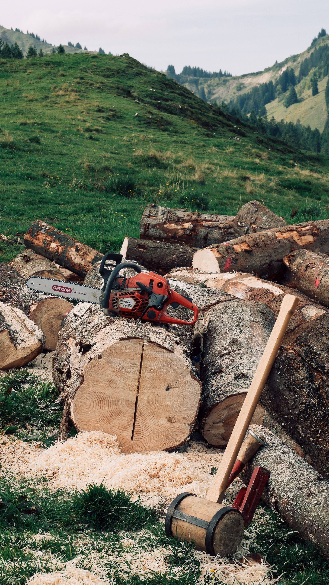
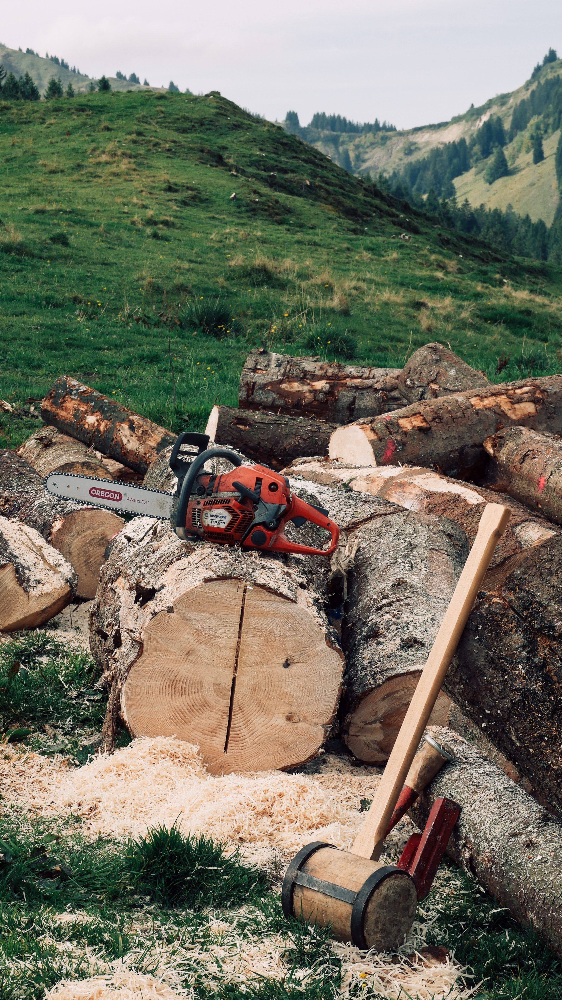
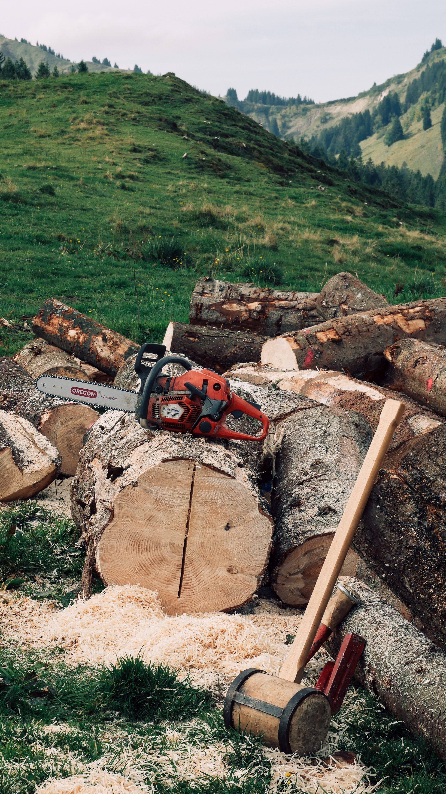

Sustainable Materials
We pride ourselves on using only sustainable materials from local forests, protected by wildlife specialists, who ensure the wellbeing and proliferation of the trees and forests.
 

TAILORED FOR YOU
There are countless elements that make you, uniquely you. And we love
helping you express your identity through our highly customisable
collection. Not just sofas, we can change the size, configuration,
colours and materials of nearly every design. It’s all about helping you
create a truly personal home that matches your style, budget and the way
you live. So more than 80% of our collection can be altered for size,
component, colour or material. From a sofa’s legs and armrests, to the
size of your dining table, or the configuration of your new wall system.

PERSONAL FURNITURE
Creating custom furniture is very close to our
heart and concept. Our concept is all about you, your world and your exciting,
personal taste. That’s why we’re creating design pieces with personal
freedom. Express your tastes by designing a custom sofa, by designing
your own media unit, by having our interior designers tailor furniture
to your home and create a bespoke, personal solution. It’s functional
design furniture that adapts to your life. Your freedom of expression is
also found in our range of over a hundred luxury fabrics and leathers.
Choose from a variety of hues and finishes. From on-trend velvet,
corduroy and other tactile structures, to exclusive pure aniline leather
and Italian lambswool felt. So start designing, optimising, combining
and personalising – we’re ready with your bespoke furniture solution.
STEP 1: STYLE SELECTION
Step one is about finding the shape and style
you like. If it’s a sofa you are looking for, check out the sofa
overview, where we have a curated selection of our sofa designs.
Whether it’s curved or straight, sharp lines or soft shapes – here is
your overview of sofa systems to fit any contemporary taste. Choose
your favourite design – maybe it’s the Osaka collection – and you’re
ready for the next step. If you are looking for a dining chair, it’s
the same process; go to the overview page, find your favourite
collection and get ready to make it your own.
STEP 2: MEASUREMENTS AND SIZE
Once you have found a design you love,
its time to make sure it fits your home. Remember that we are not able
to show everything online - but if you have your heart set on a
specific piece, check the product details to find all relevant
measurements. If you are in doubt, visit us and have a talk with our
talented team members on how to integrate and optimise your space.
Once you have the perfectly sized designer piece, you’re on to step 3
where you indulge in fine materials and exciting colours.

STEP 3: MATERIALS AND FABRICS
Whether you have your heart set on a
dining chair, sofa or table - the task is alike; It’s time for colours
and surfaces. Here on our website you can start playing around and
design your own sofa, choose the right colour of fronts on the custom
wall unit and make the designs fit your personal style. Want to feel
the touch of our quality leather in person – visit a store and get
first-hand experience along with guidance from our talented interior
designers.

We love interior design and through passion and persistence, we create furniture designs that fit your personal lifestyle. We can help you with the decisions in your home by contacting us. A member of our team will assist you in creating the dream layout of you home
We pride ourselves on using only sustainable materials from local forests, protected by wildlife specialists, who ensure the wellbeing and proliferation of the trees and forests.

One of the things we enjoy most about our business is
that each piece of wooden furniture we create is as unique as the
customers who ordered it. We love hearing the excitement in someone’s
voice as they explain their idea to us and are equally excited to help
bring that vision to life. Whether you’re looking to create a very
specific piece or need a solution for an awkward area, our team can
help. Shoot us an email, give us a call or pop by our beautiful showroom
and let’s get started!
Email: contact@fboutique.com